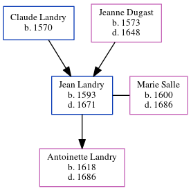

Jean Claude Landry 1593 - 1671
[ Home ] | [ Calendar ] | [ Surnames Index ] | [ Census Index ] | [ Family History ]The child of Claude Landry and Jeanne Dugast, Jean Landry, the 11 times great-grandfather of Michele Copp (née Phillips), was born in Mortagne, Orne, Basse-Normandie, France in 15931 and married Marie Salle (with whom he had 1 child, Antoinette) in France in 16251.
He died in 1671 in Mortague, , Perche, France.
Parents
- Claude was born in 1570
- Jeanne was born in 1573
Children
- Antoinette was born in 1618
Citations
- U.S. and International Marriage Records, 1560-1900 Online publication - Provo, UT, USA: The Generations Network, Inc., 2004.Original data - This unique collection of records was extracted from a variety of sources including family group sheets and electronic databases. Originally, the information was deriv
Family Tree
Generated by ged2site. Last updated on Jun 11, 2024